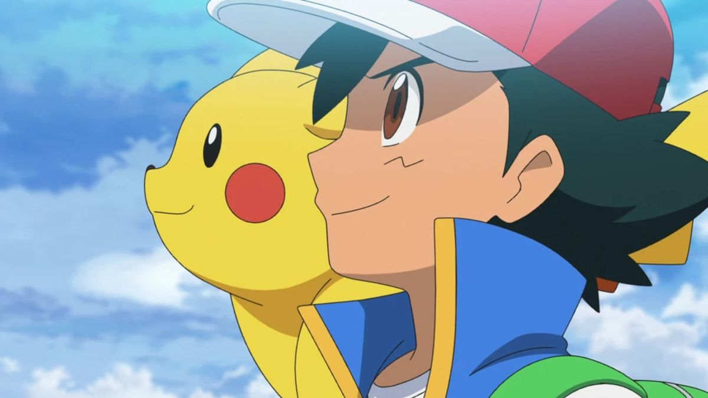
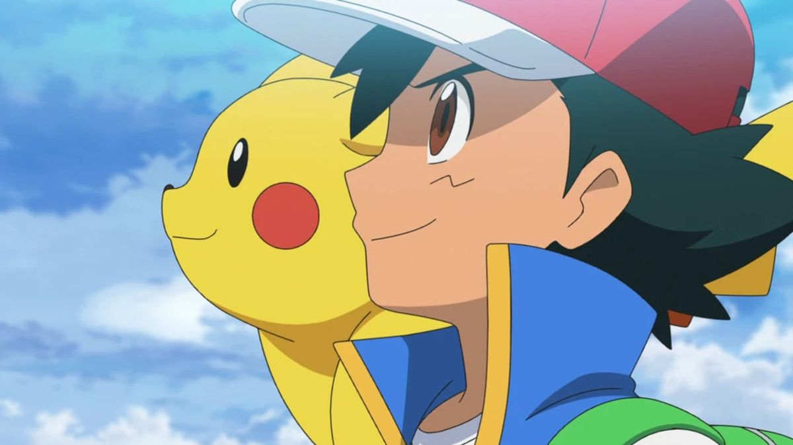
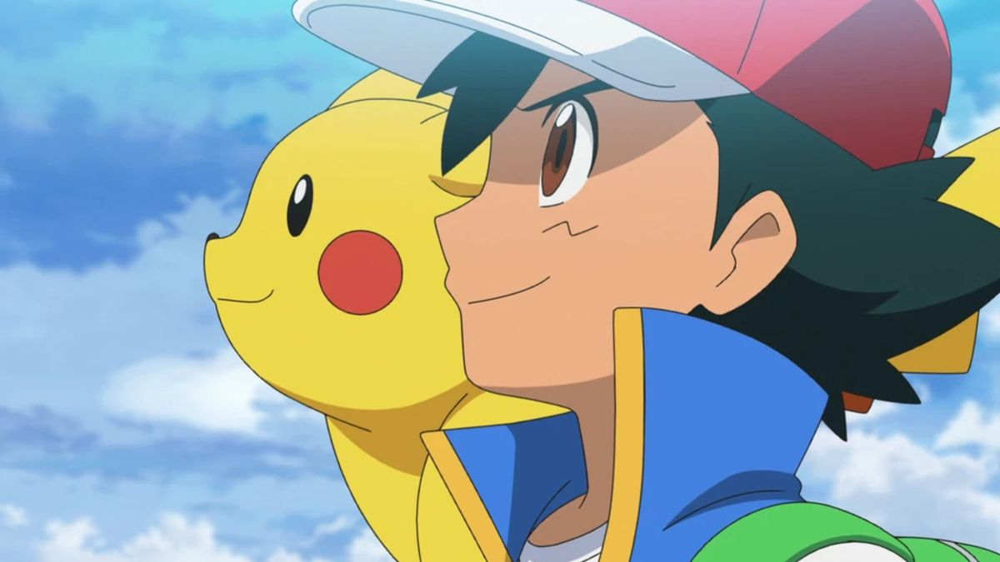

| Lunes | Martes | Miercoles | Jueves | Viernes | Sábado | Domingo | |
|---|---|---|---|---|---|---|---|
| Horas | Desde las 2pm hasta las 6pm | Desde las 10am hasta las 2pm | No | Desde las 2pm hasta las 6pm | Desde las 10am hasta las 2pm | Desde las 2pm hasta las 6pm | Desde las 10am hasta las 2pm |
Pokémon es una querida franquicia que comenzó como videojuego en 1996 de la mano de Nintendo, Game Freak y Creatures. Desde entonces se ha expandido al polifacético mundo de los juegos, los juegos de cartas coleccionables, los programas de televisión, las películas, compras y mucho más. En esencia, Pokémon gira en torno a la captura, entrenamiento y lucha contra criaturas llamadas Pokémon, y los jugadores (llamados Entrenadores Pokémon) intentan convertirse en Maestros Pokémon. se centra principalmente en la serie de videojuegos, donde los jugadores reúnen equipos de Pokémon con diferentes Pokémon con diferentes habilidades, movimientos y atributos para enfrentarse a otros entrenadores. torneos, siendo las iteraciones más recientes Pokémon Espada y Pokémon Escudo. Los torneos se divide en torneos. Los atletas compiten a nivel local, regional, nacional e internacional. Los principales eventos de Los eventos principales incluyen torneos en línea, desafíos máximos, exámenes parciales, torneos internacionales y el evento culminante, el Campeonato Mundial Pokémon. evento culminante, el Campeonato Mundial Pokémon. Los jugadores se ven obligados a formar y entrenar equipos basándose en reglas, políticas y y restricciones establecidas por The Pokémon Company International. Esto crea un entorno justo y desafiante con una variedad de estrategias y un juego bien alentado. Cada año, el Campeonato Mundial Pokémon reúne a los mejores entrenadores del mundo para competir por el título de Campeón del Mundo Pokémon. del mundo para competir por el título de Campeón Mundial Pokémon..
